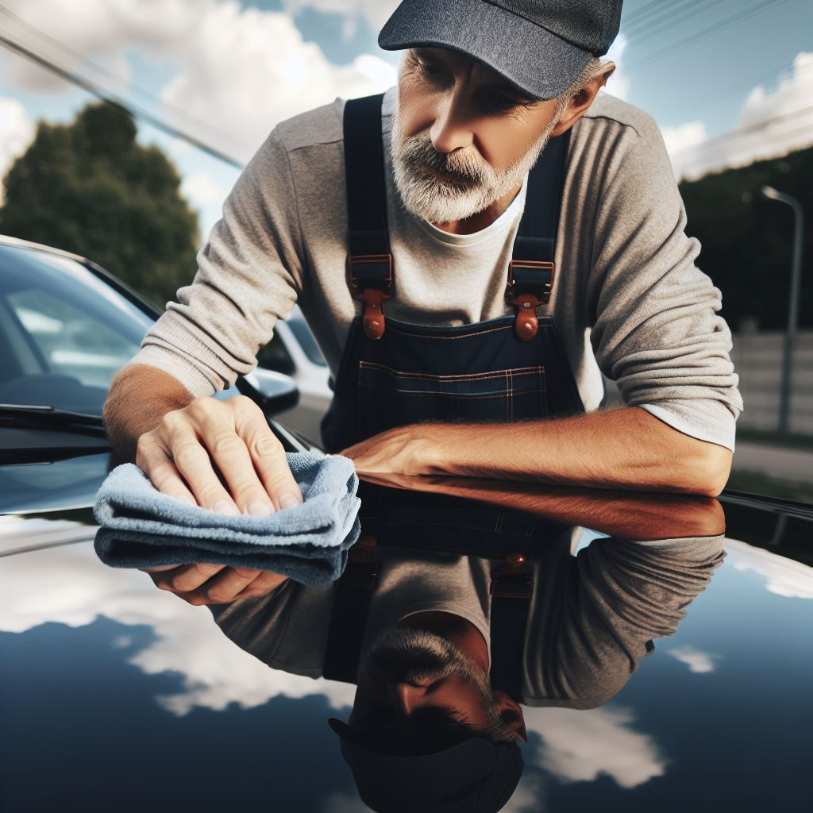

[What We Offer, Exterior Detailing Our exterior and interior detailing services are designed to enhance the appearance of your vehicle's exterior and interior, protect its paint, and restore its shine.
Hand Washing: Gentle hand washing to remove dirt, grime, and contaminants from your vehicle's exterior. Paint Correction: Removing imperfections such as swirl marks, scratches, and oxidation to restore your paint's finish. Paint Protection: Applying a protective coating or sealant to protect your paint from the elements and maintain its shine. Wheel and Tire Care: Cleaning and detailing your wheels and tires to enhance their appearance and protect them from damage. Interior Detailing. Headlight Restoration: Restoring cloudy or yellowed headlights to improve visibility and enhance the appearance of your vehicle. Ceramic Coating: Applying a ceramic coating to provide long-lasting protection and enhance the gloss and shine of your paint. Convertible Top Care: Cleaning and conditioning convertible tops to protect them from the elements and maintain their appearance. Engine Bay Detailing: Cleaning and detailing of the engine bay to remove dirt, grease, and grime and enhance the appearance of your engine.

Vacuuming: Thorough vacuuming of carpets, upholstery, and floor mats to remove dirt, debris, and pet hair. Interior Cleaning: Cleaning and conditioning of all interior surfaces, including dashboard, door panels, and seats, to remove stains and restore their appearance. Odor Removal: Eliminating odors caused by spills, pets, or other sources to leave your car smelling fresh and clean. Leather Care: Cleaning and conditioning of leather seats to restore their softness and prevent cracking and fading. Additional Services.